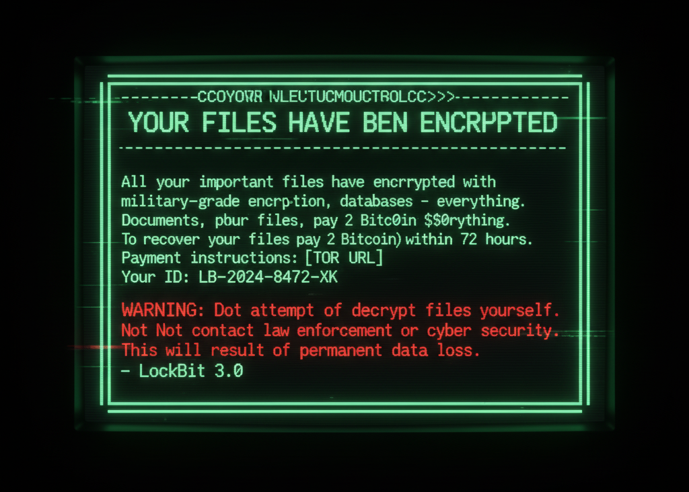

INCOMING TRANSMISSION: Connecting Jennifer to SOC Analyst
"Hey, this is [Your Name] from IT."
"Hi... this is Jennifer from Accounting. Um—something’s wrong with my computer."
"Alright, what’s going on?"
"I can’t open any of my files. They all have weird extensions now… like .lockbit. I don’t even know what that means."
“.lockbit”? Can you repeat that?
"Yeah… all my Excel files, reports, everything. And there’s this text file on my desktop that says ‘Restore My Files’. It says something about paying in Bitcoin or my files will be deleted..."

(There’s a moment of silence. Your stomach drops.)
"Jennifer,don’t click anything else, okay? Don’t open that file again, don’t try to rename or move anything."
"Oh my God… are we hacked?Is it a virus?"
"It looks like ransomware. I need you to step away from your computer right now."
"What? Is it that serious?"
"Yes. Disconnect from Wi-Fi if you can — just pull the cable or turn off the connection icon on your screen. **I’m on my way.**"
"I—I didn’t do anything! I just opened my computer like normal this morning and everything was already like this!"
"That’s okay. You did the right thing by calling immediately. Just leave the computer as it is — it’s part of our investigation now. I’ll handle it from here."